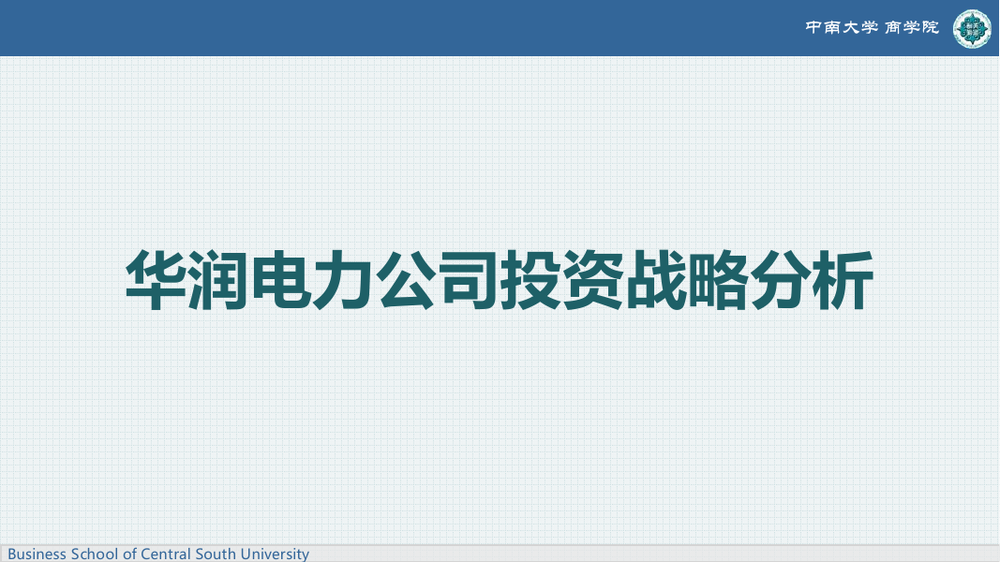
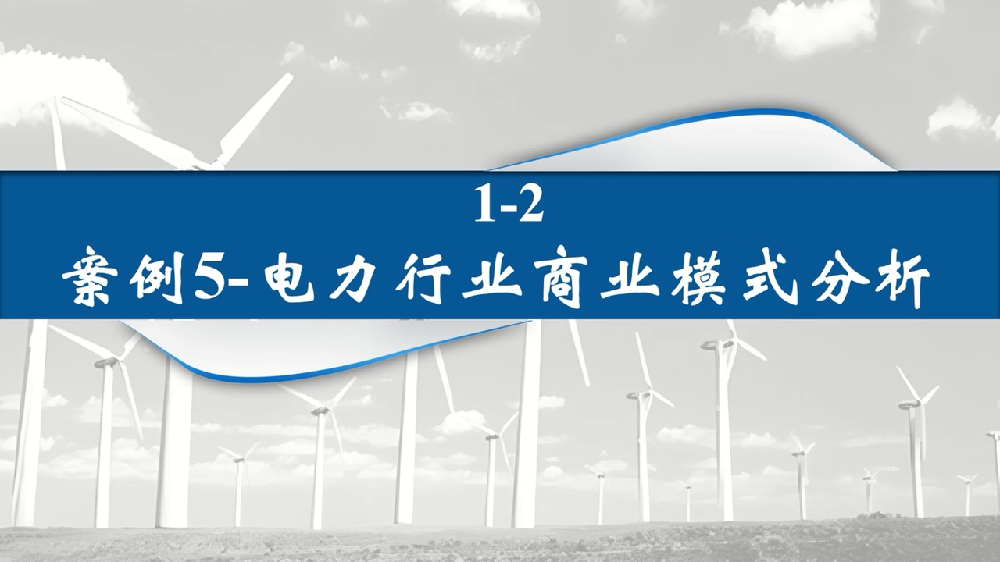
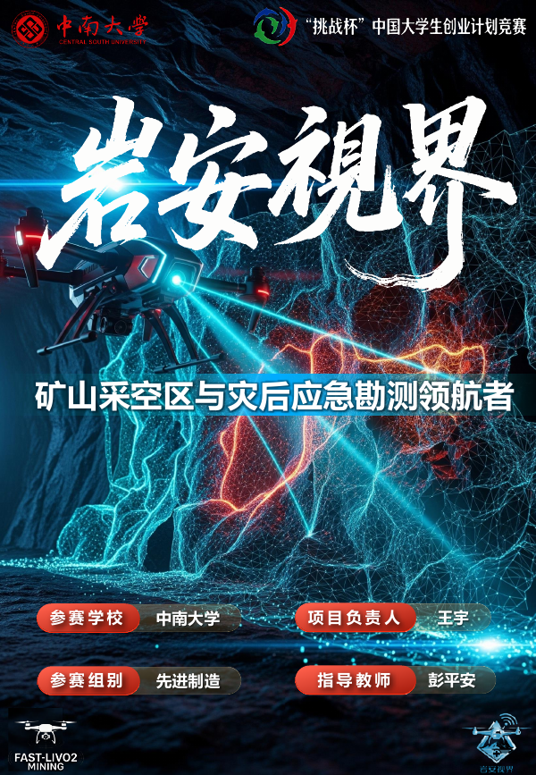
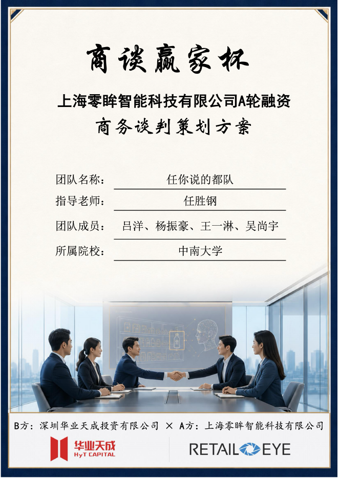
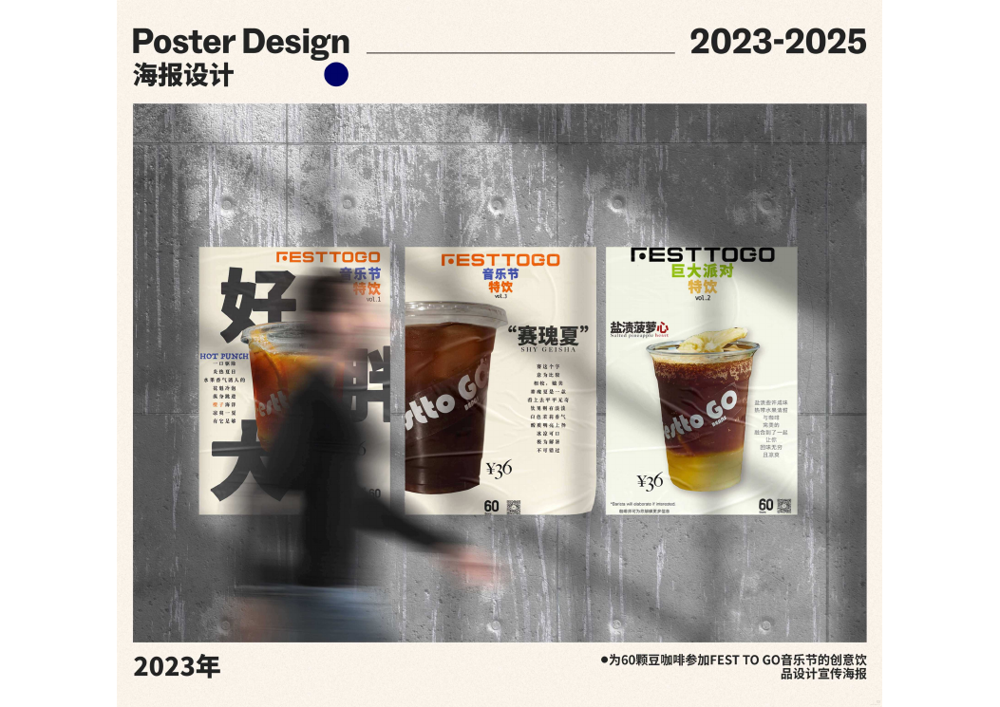
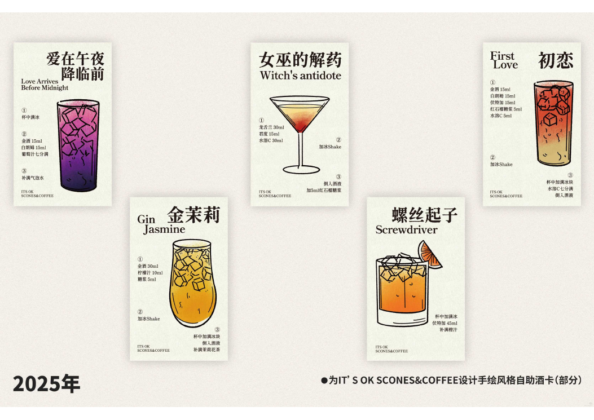
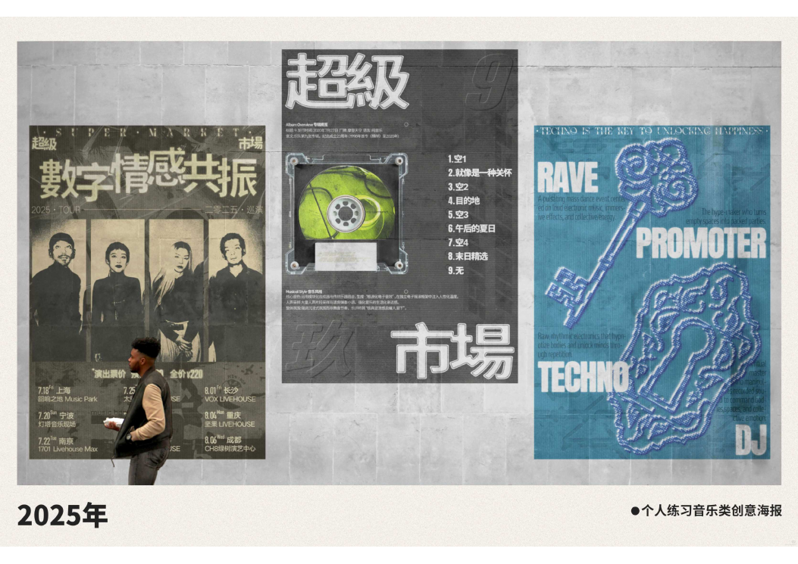

数据分析业务运营产品工具行业研究增长策略视觉表达
Resume · 个人履历
先看经历，
再看我如何解决问题。
从应用经济学研究到一线业务运营，我持续把分析能力、商业判断和工具开发连接起来。以下内容基于最新简历完整呈现。
Education
教育背景
2024.09 — 至今硕士
中南大学
应用经济学
3.72 / 4.00专业前 10%
主修课程：数据挖掘与机器学习、经济学实证分析与 Stata 应用、企业理论等。
2020.09 — 2024.06学士
湖南工商大学
国际经济与贸易
3.36 / 4.00专业前 5%
主修课程：国际贸易、金融学、国际商务谈判、商业大数据分析、初级会计学等。
Experience
实习经历
2026.05 — 2026.08
业务运营
蔚来汽车有限公司
200+一线人员使用工具
60%响应效率提升
15%30 日复购率提升
28%日均订单增长
展开工作详情 ＋
- 工具开发与运营提效
洞察跨城市业务信息分散、费用规则复杂及一线决策效率低等痛点，搭建自动化经营看板并独立上线 RSC 智能测算工具，实现指标集中追踪及多场景方案自动比价；累计服务 200+ 一线人员，推动响应效率提升 60%。
- 数据分析与策略复盘
输出经营分析日报、周报 50+ 份，按城市、业务及拉新渠道拆解目标与达成情况，跟踪完单率、取消率、渗透率和核销率等关键指标，识别转化漏斗瓶颈，为渠道投产优化及运营策略迭代提供数据支持。
- 用户分层与精准营销
基于用户行为、画像及订单数据构建用户分层模型，识别高价值及流失风险用户，制定差异化触达策略，通过 A/B 测试迭代唤醒方案，累计唤醒用户 140+ 人，推动 30 日复购率提升 15%，实现新用户占比全国第一。
- 活动运营与模式验证
策划员工团购活动，推动上门洗车业务渗透；搭建一键送车业务增长的全流程 SOP 并推动多城市落地，协同各城市团队提升用户触达与服务转化，日均订单量增长 28%、持续突破 160 单，GMV 同比增长 25%。
2024.01 — 2024.08
运营
湖南企润科技有限公司
40+活动现场成交
20%GMV 同比增长
600+门店日均人流
30%优胜方案点击提升
展开工作详情 ＋
- 活动策划与项目落地
策划线下骑行节营销活动，联动设计、直播及投放团队优化活动内容和用户转化路径，现场成交 40+ 单，实现 GMV 同比增长 20%；带动活动后一周社群持续讨论与用户自发传播，推动线下门店日均人流量突破 600 人。
- 用户分层与增长运营
基于用户行为和转化数据进行分层，完善用户画像并制定差异化触达策略，推动高价值用户次月留存率提升 8 个百分点、新用户客单价提高 18%。
- 经营分析与问题诊断
拆解流量、转化及经营等指标，定位业务增长瓶颈并输出 6 份分析报告。针对核心商品“高曝光、低点击”问题分析品类 TOP20 竞品，开展 14 天 A/B 测试，推动优胜方案点击率提升 30%，为运营策略调整提供数据支持。
Projects
项目经历
国家社科基金重大项目：新能源产业区域协同发展机制研究
- 行业研究与政策输出聚焦新能源、AI 等产业，梳理行业趋势、竞争格局、商业模式与代表性企业战略，成果作为教学参考与案例来源纳入 MBA 课程教学体系；主笔 3 份政策内参报告，多项建议被省级能源主管部门采纳并获省政府表彰。
- 数据建模与分析构建 336 个城市能源经济多期面板数据库并持续更新，开展数据处理与实证分析，参与能源模型构建。
全国高校商业精英挑战赛 / 电子商务“三创赛”
- 商业策划与团队协作统筹跨境电商创业项目，组织 5 名成员完成市场分析、选品、商业模式、电商运营及直播营销；策划 6 场直播，总观看人数超 20 万。
- 运营增长与商业成果基于市场需求、竞争强度与产品利润空间制定选品与运营策略，推动亚马逊店铺销售额增长 35%、累计突破 50 万，项目获得国家级创业竞赛奖项；相关策略在实践中被合作企业参考采纳。
Campus
校园经历
2022.02 — 2023.10
大学生书法协会 · 策划部长
20+策划执行活动8协同部门2000+校内外参与人数
活动策划与项目统筹：负责协会全年活动的策划及执行，完成活动方案、流程制定、任务拆解、物料统筹、财务预算与风险预案，并协调宣传、外联等 8 个部门推进落地。
团队协作与活动成果：带领团队完成 20+ 项活动（含 3 场大型），校内外参与人数超过 2000 人，并获得多家媒体报道。
Honors & Skills
荣誉、竞赛与技能
持续稳定的学习与组织表现
- 研究生学业奖学金一等奖、二等奖
- 本科连续 3 年校级奖学金、三好学生
- 优秀毕业生、优秀社团个人
- 优秀社会实践个人、优秀心理委员、优秀朋辈
10+ 项国家级、校级与院级奖项
- 全国高校商业精英挑战赛 / 电子商务“三创赛”项目获国家级创业竞赛奖项
- 其他竞赛奖项覆盖国家级、校级与院级
CET-4 / CET-6计算机二级 · 优秀高级中学教师资格证创智数学微专业证书
StataMatlabExcelPPTWordSQLPhotoshop剪映AI 工具
Portfolio · 作品集
七个章节，
看见想法如何落地。
从上线工具到数据研究、商业策略与视觉表达。选择章节，直接阅读和体验作品。
01 / 网站设计与上线独立设计 / 开发 / 上线
把跨城市、跨场景、跨计价规则的复杂测算，压缩为一次输入。
洞察业务信息分散、费用规则复杂、一线决策慢等问题，搭建自动化经营看板，并把服务里程、时长、优惠券、夜间费等规则沉淀为实时测算工具。系统自动比较多套方案，推荐更优选择并生成电联话术。
- 200+
- 累计服务一线人员
- 60%
- 响应效率提升
- 1 个
- 人完成产品闭环
实时预览 · 页面可继续向下滑动
桌面端可直接操作；手机端点击“体验工具”后交互，退出即可继续浏览。真实网站 · 实时结果
识别决策断点
梳理跨城市规则、费用项与高频咨询，把隐性经验转成结构化条件。
抽象计价模型
将里程、时长、返程、等候、券包和时段费拆解为可验证的计算模块。
形成行动建议
不只返回价格，还输出推荐理由和可直接使用的沟通话术。
02 / 网易云音乐数据分析
从 1,330 个歌单里，
找到内容增长的信号。
NeteaseCloudMusicDataAnalysisPython 数据项目
网易云音乐欧美歌单抓取、清洗与可视化分析
使用 Python 对歌单索引页和详情页进行采集，整理歌单、歌曲、贡献者及互动数据，输出播放、收藏、评论、贡献与分布图，并将歌单介绍生成词云，支持内容选题与运营优化。
- Python
- Requests
- BeautifulSoup
- Pandas
- Matplotlib
- WordCloud
1,330歌单样本
18,484歌曲记录
11采集与分析模块
01 / Data Output评论 Top 10
情绪与场景，是高互动内容的入口
“每日更新”“旋律控”“节奏控”“作业 BGM”等明确场景词在高评论歌单中反复出现，应优先用于标题与标签设计。
头部播放高度集中，差异化比泛化更重要
少数歌单形成显著流量峰值，新歌单应通过具体人群、使用时刻与情绪价值建立识别度。
用“场景 × 情绪 × 更新机制”重组歌单
强化封面与标题的一致性，稳定更新节奏，并围绕收藏、评论与播放三类指标分别优化内容。
从产业趋势，走向公司战略。
聚焦新能源、AI 算力、智能机器人及电力行业，结合产业链、竞争格局、商业模式与代表性企业战略形成研究框架。国家社科基金重大项目中的研究成果也作为 MBA 教学参考与案例来源。
Research Collection
阅读全文《产业分析与公司战略》专著
以产业分析框架串联公司战略与案例研究，沉淀系统化研究成果。
Industry Research · 20 pages
阅读全文AI 算力基础设施与智能机器人
围绕算力基础设施与智能机器人两条产业链，分析结构、竞争格局和代表性公司的战略选择。

Corporate Strategy · 50 pages
阅读全文华润电力投资战略分析
从政策、行业与公司三个层次，分析新能源与电力企业的投资战略。

Video Analysis · 8 parts
播放视频电力行业商业模式分析
用视频拆解电力行业价值链、收入结构与商业模式。
把真实需求，写成可执行的商业计划。
围绕矿山采空区与灾后应急勘测需求，组织市场洞察、产品方案、运营路径与商业化逻辑，呈现从问题识别到项目规划的过程。

73 pagesEntrepreneurship · Business Plan
阅读全文岩安视界商业计划书
围绕矿山采空区与灾后应急勘测场景，梳理需求、解决方案与商业化落地路径。
让融资谈判，有准备、有路径。
梳理融资目标、双方利益、关键条款与谈判流程，并预设不同情境下的应对方案，形成 A 轮融资商务谈判策划书。

100 pagesBusiness Negotiation · Strategy
阅读全文A 轮融资商务谈判策划书
围绕融资目标、利益结构、关键条款与谈判流程，构建完整策划方案。
走进现场，让研究回到真实生活。
以入户调查、问卷、访谈与数据分析，研究农村养老服务体系及三孩政策背景下的家庭生育意愿，分别提出服务改进与政策建议。
把信息与情绪，变成可感知的视觉。
从商业活动到文化内容，围绕信息组织、品牌表达与传播场景，完成海报、活动物料、手绘与音乐主题视觉设计。



Visual Design · 7 pages
浏览设计作品设计作品集 2023–2025
咖啡节与咖啡店海报、淘宝活动物料、手绘饮品卡及音乐视觉练习。